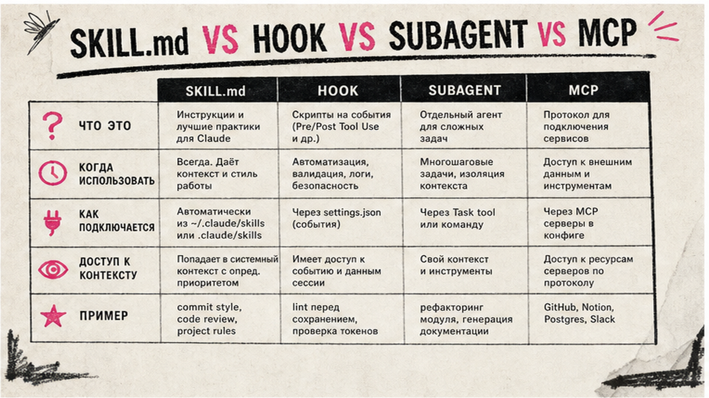
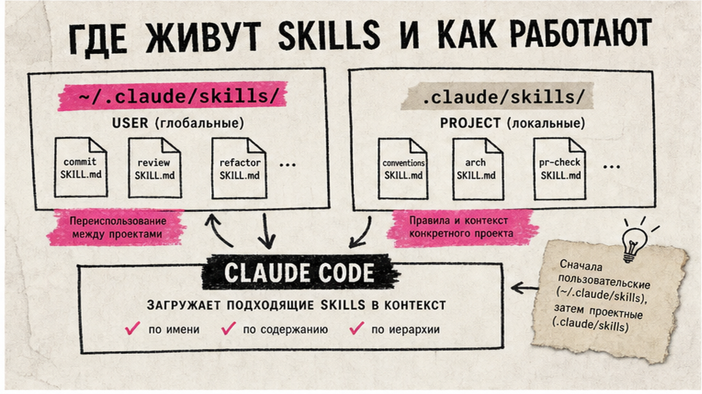
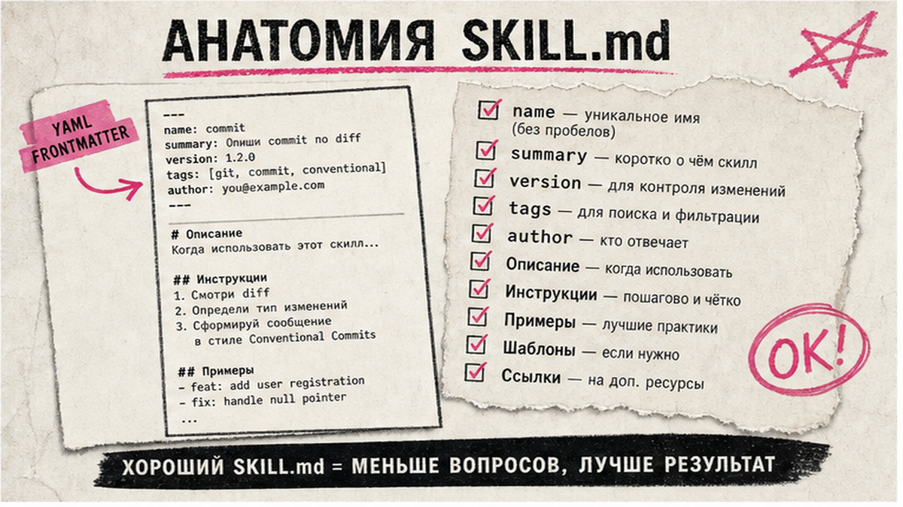

Claude Code пишет код быстро, но без skills вы каждый раз заново объясняете одно и то же: как оформлять коммиты, что проверять перед деплоем, как читать diff. Skill – это папка с файлом SKILL.md: короткий YAML-триггер в шапке и инструкции, которые Claude подгружает сам или по команде /имя-skill. За 30–45 минут вы соберёте первый рабочий skill, проверите автоматическую активацию по description и закоммитите его в git для команды.
TL;DR / Быстрый инсайт: Claude Code skill – каталог с обязательным SKILL.md. Храните личные skills в ~/.claude/skills/, командные – в .claude/skills/. Поле description – триггер для auto-invocation; ручной вызов – /имя-каталога. Для опасных сценариев ставьте disable-model-invocation: true, для git-команд – allowed-tools. Тест: 5 промптов, лимиты 1536 символов в description и 500 строк в SKILL.md, затем commit.
Skills следуют открытому стандарту Agent Skills; Claude Code добавляет управление вызовом, subagents и dynamic context. Это не замена настройке MCP (внешние API и сервисы) и не дублирует hooks (жёсткие реакции на события). Skill – "шпаргалка с процедурой", которую модель подтягивает, когда задача похожа на ваш workflow.

Перед mkdir спросите: это повторяемая инструкция или внешний сервис? Skill – текстовый workflow с опциональными скриптами. MCP – "розетка" к API, БД, OAuth-сервисам. Hook срабатывает на событие (PreToolUse, Stop) без обучения модели. Subagent изолирует контекст для тяжёлых параллельных ролей.
| Механизм | Когда использовать | Не использовать когда |
|---|---|---|
| SKILL.md | Повторяемый чеклист, domain conventions, lazy-load инструкций | Разовый факт про проект – положите в CLAUDE.md |
| Slash command / skill | То же, что skill; legacy .claude/commands/deploy.md = /deploy | Нужны references и scripts – делайте каталог skill |
| Hooks | Детерминированные события без "думания" модели | Обучение "как писать API" – это skill |
| Subagents | Изоляция контекста, параллельные роли (subagents в Claude Code) | Простая одношаговая инструкция |
| MCP | Внешние tools: GitHub, Notion, CRM через протокол | Только текстовые правила без tools |
Делайте: один skill = одна повторяемая задача (commit message, code review, deploy prep). Не делайте: свалку "всё про проект" в SKILL.md – для этого есть CLAUDE.md.

Имя каталога = команда вызова: папка deploy-staging даёт /deploy-staging. При совпадении имён побеждает enterprise, затем personal, затем project; project skill перекрывает bundled skill с тем же именем.
| Параметр | Personal skill | Project skill |
|---|---|---|
| Путь | ~/.claude/skills/<name>/SKILL.md | .claude/skills/<name>/SKILL.md |
| Кто видит | Все ваши проекты на этом ПК | Только текущий репозиторий |
| Когда выбирать | Личные привычки (стиль коммитов, заметки) | Командные регламенты, deploy, review |
| Git | Не коммитится (домашняя папка) | Коммитьте .claude/skills/ в репозиторий |
Live change detection: правки в существующем каталоге подхватываются без перезапуска сессии; новый top-level каталог skills может потребовать restart. Делайте: project skills для команды. Не делайте: хранить production-регламент только в ~/.claude/skills/ – коллеги его не увидят.

Skill – каталог с обязательным SKILL.md. YAML frontmatter (метаданные между ---) задаёт name и description; markdown-тело – пошаговые инструкции. Имя name: lowercase, цифры, дефисы, макс. 64 символа, совпадает с именем каталога. Description – до 1024 символов по спецификации Agent Skills; в listing Claude Code description и when_to_use обрезаются на 1536 символах. Основной SKILL.md – до 500 строк; детали выносите в references/, scripts/, assets/.
Минимальный рабочий пример summarize-changes (канон из официальной документации):
Пример summarize-changes/SKILL.md:
---
name: summarize-changes
description: Summarize git diff or uncommitted changes. Use when user asks what changed, review pending work, or summarize recent commits.
---
# Summarize changes
## Steps
1. Read the injected git diff below
2. List changed files grouped by purpose
3. Note breaking changes or TODOs
4. Keep summary under 200 words
## Output format
- Scope: one line
- Files: bullet list
- Risk: breaking / migrations / none
!`git diff HEAD`
Строка с восклицательным знаком и обратными кавычками – dynamic context: вывод shell-команды подставляется в prompt до отправки Claude. Делайте: description с явными trigger phrases ("what changed", "review pending work"). Не делайте: marketing-текст в description – модель undertrigger skills; skill-creator от Anthropic советует формулировки "чуть настойчивее".
Workflow от идеи до рабочего skill:
Схема:
Задача → mkdir каталога → SKILL.md (YAML + body) → Claude Code /skills → тест auto → тест /skill-name → production frontmatter → git commit
Custom commands из .claude/commands/ объединены со skills: deploy.md и skills/deploy/SKILL.md оба дают /deploy. Для supporting files выбирайте каталог skill. Делайте: оба теста A и B перед тем, как звать skill "готовым". Не делайте: полагаться только на auto-invocation – проверьте ручной /skill-name.
После базового теста добавьте поля управления вызовом из документации Claude Code:
Пример production-шапки для deploy-skill:
Пример production-шапки deploy-staging:
---
name: deploy-staging
description: Deploy to staging after tests pass. Use when user says deploy staging or push to stage.
disable-model-invocation: true
allowed-tools: Bash(git *), Bash(npm *)
context: fork
---
Стек skills: /code-review /fix-issue 123 (Claude Code v2.1.199+, до 6 skills). Nested qualified names /apps/web:deploy – v2.1.203+. Делайте: disable-model-invocation для опасных workflow. Не делайте: allowed-tools на широкий Bash(*) без необходимости.
Перед merge в main прогоните пять тест-кейсов с промптами, которые должны и не должны триггерить skill. Опционально: /plugin install skill-creator@claude-plugins-official для eval description (репозиторий anthropics/skills).
Skills дополняют MCP: skill учит "как работать", MCP даёт доступ к внешним системам – см. гайд по MCP. Для фоновых цепочек CRM и мессенджеров – курс Make.com и вайбкодинга (159+ уроков): Claude Code готовит черновик, Make публикует и шлёт уведомления 24/7.
Материал проверен: эксперт Артур Хорошев (CEO Maya AI, практик Claude Code, MCP и Make.com).
Достоверность данных: пути skills, лимиты frontmatter и поведение /skills сверены с официальной документацией Claude Code (code.claude.com/docs/ru/skills) и Agent Skills spec на июль 2026 года.
Личные – в ~/.claude/skills/<name>/SKILL.md (все проекты на ПК). Командные – в .claude/skills/<name>/SKILL.md в корне репозитория. Для monorepo поддерживаются nested qualified names. Project skills коммитьте в git.
Механизмы объединены: .claude/commands/deploy.md и .claude/skills/deploy/SKILL.md оба дают /deploy. Skill – каталог с frontmatter, телом инструкций и optional scripts/references; command – один markdown-файл без supporting files.
Введите /имя-каталога в Claude Code, например /summarize-changes. Стек: /code-review /fix-issue 123 (v2.1.199+). Если стоит disable-model-invocation: true, только такой ручной вызов сработает.
Усилите description явными trigger phrases. Проверьте disable-model-invocation: true (блокирует auto). Запустите eval через skill-creator. Убедитесь, что skill виден в /skills и не скрыт skillOverrides.
До 500 строк в основном файле. Детали, длинные примеры и справочники – в references/, scripts/, assets/. Description и when_to_use обрезаются на 1536 символах в listing.
Правки в существующем каталоге ~/.claude/skills/ или .claude/skills/ подхватываются без перезапуска сессии. Новый top-level каталог skills может потребовать restart Claude Code.
Skill – инструкции и workflow внутри Claude Code. MCP – подключение внешних API, БД и OAuth-сервисов. Используйте оба: skill задаёт "как", MCP даёт "куда стучаться". Подробнее в настройке MCP.